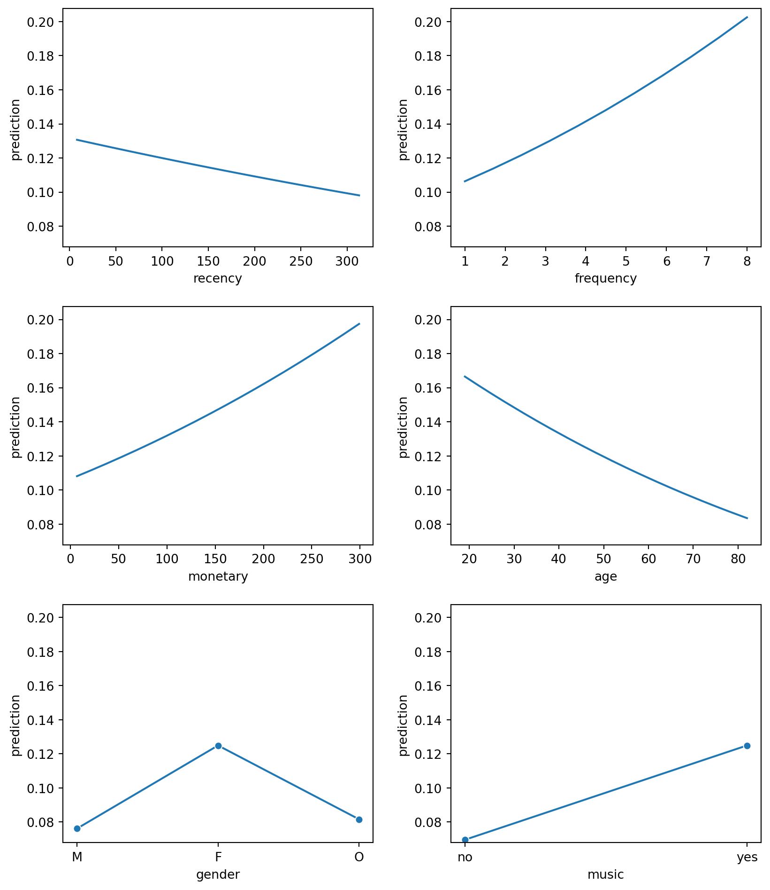
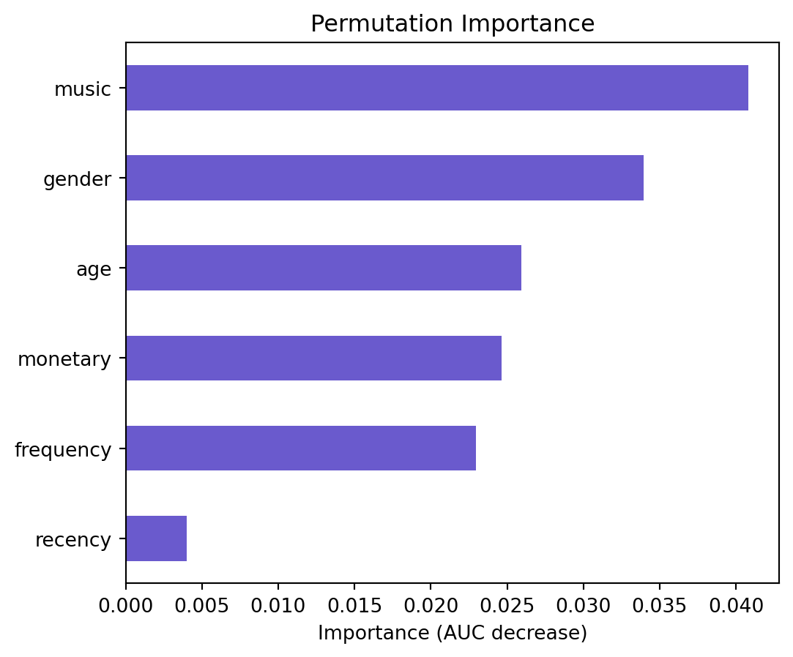
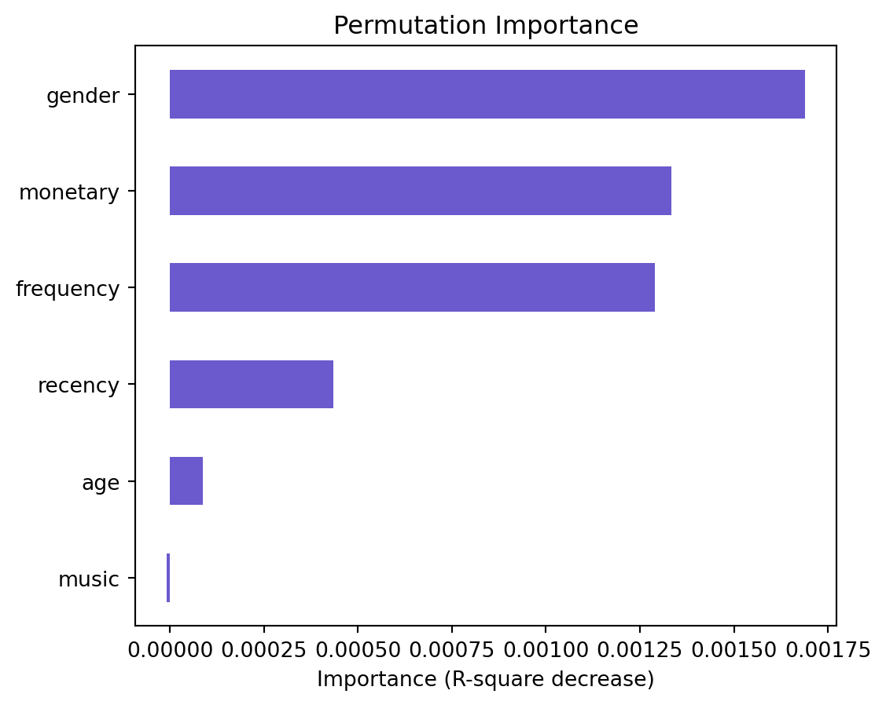
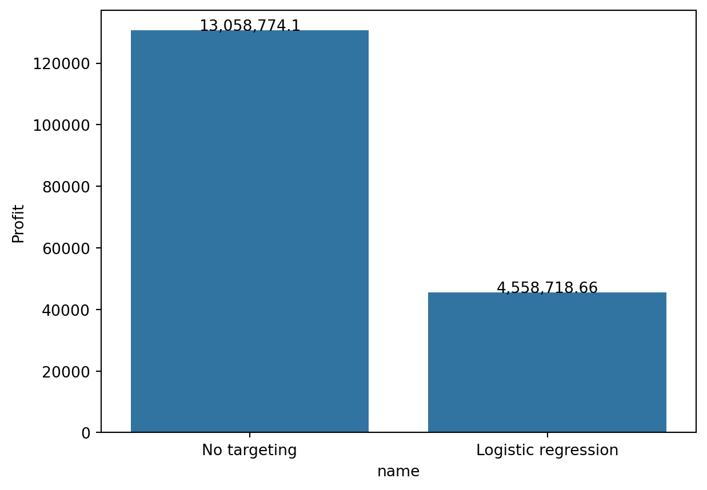
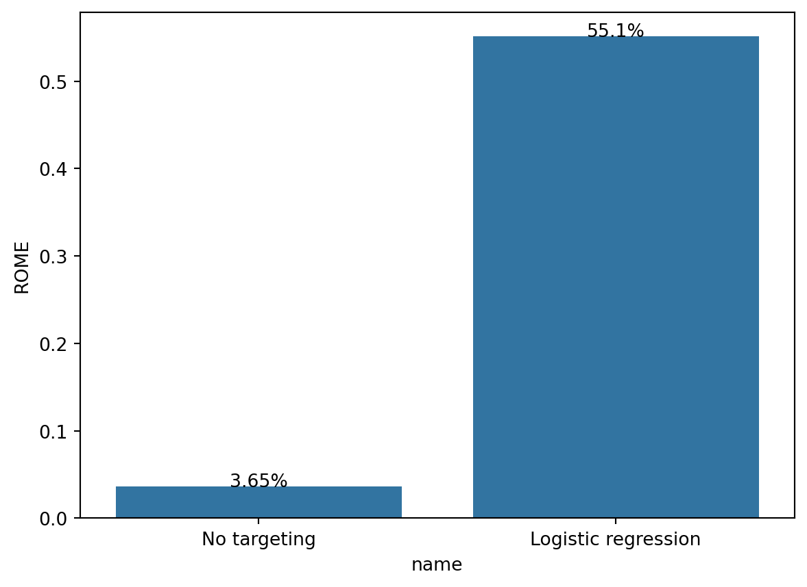
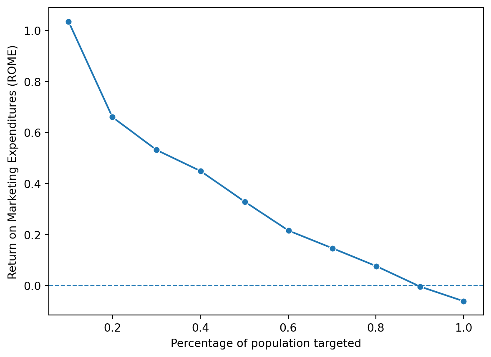
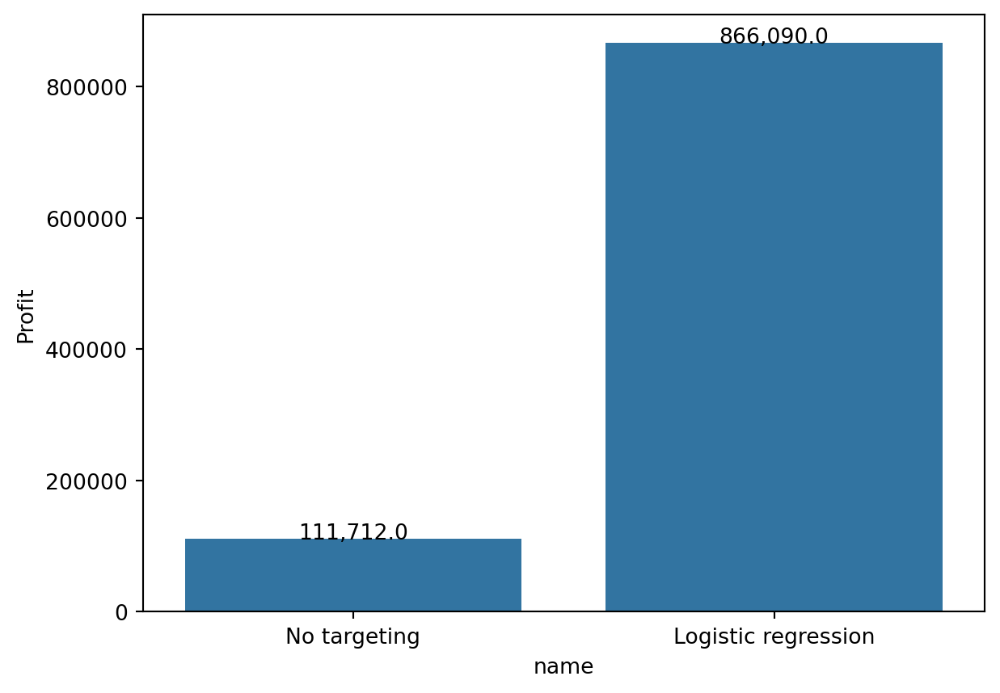
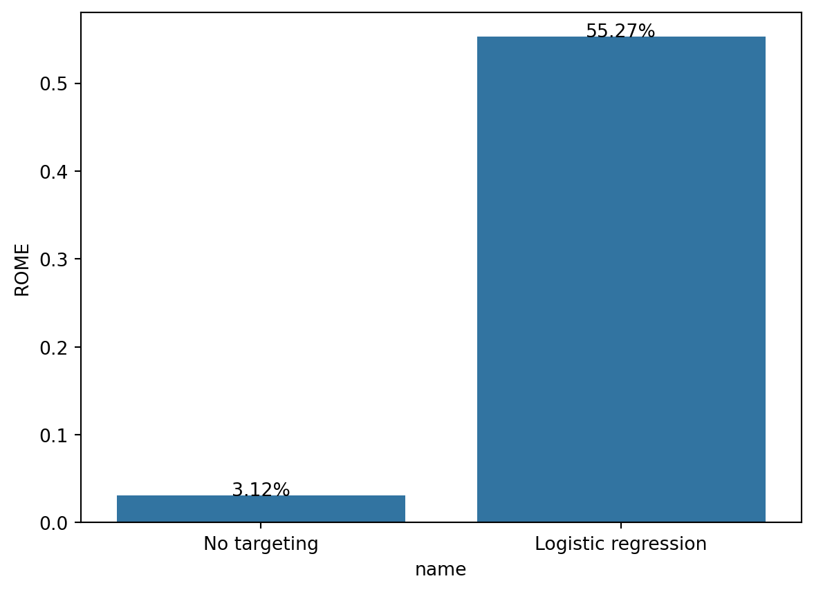

import numpy as np
import pandas as pd
import polars as pl
import pyrsm as rsm
import seaborn as sns
import matplotlib.pyplot as plt
# you can import additional python packages but only use packages that
# are already part of the docker containerTuango - Targeting Mobile App Messages
Add text motivating your work in Markdown format. Markdown To help you get started test and roll example available using the command below.
usethis --name "rsm-mgta455-bbb-test-rollout" --dest "~/Desktop" --url "https://www.dropbox.com/scl/fo/si2at367p43hu6dodjtgb/ALvl7nJfcRDTdMGlFtmkiCE?rlkey=yx5nwcd3bottgw6vc3r9lqte8&dl=1"
# Use this dataset and notebook to answer questions 1-13
tuango = pd.read_parquet("data/tuango_pre.parquet")
tuango| userid | buyer | ordersize | recency | frequency | monetary | age | gender | music | training | test | |
|---|---|---|---|---|---|---|---|---|---|---|---|
| 0 | U15889344 | no | 0.0 | 309 | 7.0 | 39.799999 | 44 | F | yes | 0.0 | 1 |
| 1 | U60246497 | no | 0.0 | 297 | 8.0 | 39.799999 | 80 | M | yes | 1.0 | 1 |
| 2 | U22965759 | no | 0.0 | 295 | 1.0 | 72.900002 | 59 | F | yes | 1.0 | 1 |
| 3 | U40811142 | no | 0.0 | 277 | 1.0 | 40.000000 | 37 | F | yes | 0.0 | 1 |
| 4 | U76283952 | no | 0.0 | 259 | 1.0 | 21.000000 | 43 | F | yes | 1.0 | 1 |
| ... | ... | ... | ... | ... | ... | ... | ... | ... | ... | ... | ... |
| 418155 | U83013842 | NaN | NaN | 19 | 4.0 | 128.000000 | 25 | F | yes | NaN | 0 |
| 418156 | U45426448 | NaN | NaN | 131 | 2.0 | 110.740000 | 20 | O | yes | NaN | 0 |
| 418157 | U48935927 | NaN | NaN | 53 | 1.0 | 126.000000 | 71 | M | no | NaN | 0 |
| 418158 | U94568595 | NaN | NaN | 12 | 4.0 | 98.000000 | 64 | M | yes | NaN | 0 |
| 418159 | U20558740 | NaN | NaN | 10 | 3.0 | 260.000000 | 34 | F | yes | NaN | 0 |
418160 rows × 11 columns
# dataset description
tuango_description = rsm.md("data/tuango_pre_description.md")data/tuango_pre_description.md
# you will likely find the below useful in this assignment
# there are missing values in the data that you will need to deal with
# why do you think there missing values?
# do you think there are data quality issues?
# or is there a simpler explanation?
tuango.buyer.value_counts(dropna=False)buyer
NaN 397252
no 18888
yes 2020
Name: count, dtype: int64# you will likely find the below useful in this assignment
tuango.buyer.isna().value_counts()buyer
True 397252
False 20908
Name: count, dtype: int64# tuango["buyer_yes"] = rsm.ifelse(tuango["buyer"] == "yes", 1, rsm.ifelse(tuango["buyer"] == "no", 0, np.nan))
# tuango.buyer_yes.value_counts(dropna=False)# create a variable called 'buyer_yes' that has value 1 when buyer == 'yes', has value 0 when buyer == 'no' and has value np.nan when buyer.isna() is True
tuango["buyer_yes"] = tuango["buyer"].map({"yes": 1, "no": 0, np.nan: np.nan})
# you can check that you have this set up correctly using the command below
tuango.buyer_yes.value_counts(dropna=False)
tuango["buyer_yes"] = tuango["buyer_yes"].astype("float64")Part I: Preliminary Analysis
Question 1
What proportion of customers responded to the deal offer message (i.e., bought the deal)?
# insert calculation code here
# the result should be expressed as a proportion/decimal
# assign the calculated number to "q2"
# there is no need to round the result
q1 = tuango["buyer_yes"].mean()
q1
q = pd.crosstab(
index=tuango.buyer[tuango.test == 1],
columns = "response rate",
normalize = "columns",
)
print(f"proportion of customers in sample that bouthgt a karaoke deal {q1.round(4)}")
print(q)
# q1 = tuango[tuango.test == 1].groupby("buyer").buyer.agg(n_obs = "count")
# q1["perc"] = q1/q1.sum()
# print(q1)proportion of customers in sample that bouthgt a karaoke deal 0.0966
col_0 response rate
buyer
yes 0.096614
no 0.9033860.09661373636885402 of customers responded to the deal offer message
Question 2
What was the average number of karaoke sessions purchased by customers that bought one or more 30-minute sessions? Use the “ordersize” variable for your calculation (2 points)
# insert calculation code here to create a pd.pivot_table that shows
# (1) counts the number of yes and no, (2) the mean ordersize, and
# (3) the standard deviation in ordersize for yes and no responses
q2 = q1.copy()
q2 = pd.pivot_table(
tuango,
values=["ordersize"],
index="buyer",
aggfunc={"buyer": "count", "ordersize": ["mean","std"]},
observed=False,
).round(4)
q2.columns = ["count", "mean", "std"]
print(q2)
# the below should show your result
# do not apply any rounding to your answer
q2.loc["yes", "mean"] count mean std
buyer
yes 2020 3.9411 1.7019
no 18888 0.0000 0.00003.9411The average number of karaoke sessions purchased by customers that bought one or more 30-minute sessions is 3.9410891089108913
Part II: Building Targeting Models
Question 3
Estimate a logistic regression model using “buyer” as the response variable (aka target or dependent variable) and, recency, frequency, monetary, age, gender, and music as the explanatory variables (aka features or independent variables)
train_data = tuango[tuango["test"] == 1]
test_data = tuango[tuango["test"] == 0]clf = rsm.model.logistic(
data = {"train_data": train_data}, # use 5% of the data for training
rvar = "buyer",
lev = "yes",
evar = ["recency", "frequency", "monetary", "age", "gender", "music"]
)
clf.summary()Logistic regression (GLM)
Data : train_data
Response variable : buyer
Level : yes
Explanatory variables: recency, frequency, monetary, age, gender, music
Null hyp.: There is no effect of x on buyer
Alt. hyp.: There is an effect of x on buyer
OR OR% coefficient std.error z.value p.value
Intercept 0.051 -94.9% -2.98 0.097 -30.768 < .001 ***
gender[F] 1.731 73.1% 0.55 0.054 10.073 < .001 ***
gender[O] 1.078 7.8% 0.07 0.128 0.584 0.559
music[yes] 1.908 90.8% 0.65 0.059 10.912 < .001 ***
recency 0.999 -0.1% -0.00 0.000 -3.292 < .001 ***
frequency 1.114 11.4% 0.11 0.010 10.861 < .001 ***
monetary 1.002 0.2% 0.00 0.000 12.499 < .001 ***
age 0.988 -1.2% -0.01 0.001 -9.115 < .001 ***
Signif. codes: 0 '***' 0.001 '**' 0.01 '*' 0.05 '.' 0.1 ' ' 1
Pseudo R-squared (McFadden): 0.046
Pseudo R-squared (McFadden adjusted): 0.045
Area under the RO Curve (AUC): 0.657
Log-likelihood: -6334.179, AIC: 12684.358, BIC: 12747.941
Chi-squared: 611.493, df(7), p.value < 0.001
Nr obs: 20,908# clf = rsm.model.logistic(
# data = {"tuango": tuango}, rvar = "buyer", evar = ["recency", "frequency", "monetary", "age", "gender", "music"]
# )
# clf.summary()Question 4
Create Prediction plots for all explanatory variables. Describe the effect of each explanatory variable on the probability that a customer will purchase the karaoke deal
clf.plot("pred")
Recency: As recency increases, the probability of purchase decreases. This is because the longer it has been since the customer last purchased, the less likely they are to purchase again.
Frequency: As frequency increases, the probability of purchase increases. This is because the more frequently a customer purchases, the more likely they are to purchase again as a loyal customer
Monetary: As monetary value increases, the probability of purchase increases. This is because the more money a customer spends, the more likely
Age: As age increases, the probability of purchase decreases. This is because older customers are less likely to purchase karaoke. younger customers are more likely to purchase
Gender: Female customers are most likely to purchase followed by other and the leas likely to purchase are men
Music: Customers who like music are more likely to purchase karaoke than those who don’t
Question 5
Use Permutation Importance to assess variable importance. Which variables seem to be most and least important in the model? Explain how Permutation Importance allows you to evaluate variable importance.
clf.plot("vimp")
Music seems like the most important variable in the model at 0.040, but this does not tell us if it is a positive or negative effect. On the other hand, recency is the least important variable in this model at less than 0.005.
Question 6
Add the predicted values from the logistic regression to the “tuango” DataFrame. Use “pred_logit” as the variable name. Compare the average of the predicted values to the overall response rate (i.e., proportion of buyers). What do you notice when you do this calculation using only the data used to estimate the model? Explain.
b = clf.predict(data = test_data)
b| recency | frequency | monetary | age | gender | music | prediction | |
|---|---|---|---|---|---|---|---|
| 20908 | 8 | 1.0 | 115.330000 | 71 | F | yes | 0.092104 |
| 20909 | 274 | 1.0 | 58.000000 | 46 | F | yes | 0.083355 |
| 20910 | 185 | 8.0 | 123.599998 | 46 | O | yes | 0.134632 |
| 20911 | 127 | 3.0 | 87.810000 | 46 | M | no | 0.041179 |
| 20912 | 31 | 8.0 | 95.000000 | 33 | F | yes | 0.244048 |
| ... | ... | ... | ... | ... | ... | ... | ... |
| 418155 | 19 | 4.0 | 128.000000 | 25 | F | yes | 0.202410 |
| 418156 | 131 | 2.0 | 110.740000 | 20 | O | yes | 0.103399 |
| 418157 | 53 | 1.0 | 126.000000 | 71 | M | no | 0.029175 |
| 418158 | 12 | 4.0 | 98.000000 | 64 | M | yes | 0.077903 |
| 418159 | 10 | 3.0 | 260.000000 | 34 | F | yes | 0.220536 |
397252 rows × 7 columns
test_data["pred_logit"] = b["prediction"]/tmp/ipykernel_17749/4294169774.py:1: SettingWithCopyWarning:
A value is trying to be set on a copy of a slice from a DataFrame.
Try using .loc[row_indexer,col_indexer] = value instead
See the caveats in the documentation: https://pandas.pydata.org/pandas-docs/stable/user_guide/indexing.html#returning-a-view-versus-a-copy
test_data["pred_logit"] = b["prediction"]tuango["pred_logit"] = clf.predict(data = tuango)["prediction"]avg_pred = test_data["pred_logit"].mean()
print(avg_pred)
print(q1)0.09659918589483014
0.09661373636885402tuango["pred_logit"] = clf.predict(tuango)["prediction"]It is the same value that we calculated in question 1. The average of the predicted values is 0.09661373636885402 which is the same as the overall response rate. This is because the model is predicting the probability of purchase based on the data used to estimate the model. So the predicted values are very similar to the actual values.The model is like to overfit and be like the observed data
Question 7
Estimate a linear regression model using “ordersize” as the response variable and recency, frequency, monetary, age, gender, and music as the explanatory variables. Estimate this regression using only those customers who placed an order after the deal offer message. Describe why you think it does, or does not, make sense to focus on this group of customers
It does not makes sense to focus on this group. They should include all customers because we might overfit with just the focus group. We are evaluating the order size, not the effectivness of the deal offer message on the customers who placed an order. It can give targeted insights on which variables are most important in driving the increase in order sizes. Both groups may have different drivers, so by combining it, we van generalize this information to more customers in the future. Our goal is to discover overall behavior not just highly commited customers
tuango_ordered = tuango[tuango["buyer"] == "yes"]
# print(tuango_ordered)
reg = rsm.model.regress(
data = {"tuango_ordered": tuango_ordered}, rvar = "ordersize", evar = ["recency", "frequency", "monetary", "age", "gender", "music"]
)# reg = rsm.model.regress(
# tuango[(tuango.buyer == "yes") & (tuango.test == 1)],
# rvar = "ordersize",
# evar = ["recency", "frequency", "monetary", "age", "gender", "music"]
# )
# reg.summary(main = False)
# correct wayreg.summary()Linear regression (OLS)
Data : tuango_ordered
Response variable : ordersize
Explanatory variables: recency, frequency, monetary, age, gender, music
Null hyp.: the effect of x on ordersize is zero
Alt. hyp.: the effect of x on ordersize is not zero
coefficient std.error t.value p.value
Intercept 3.665 0.174 21.104 < .001 ***
gender[F] 0.126 0.089 1.425 0.154
gender[O] 0.259 0.208 1.243 0.214
music[yes] 0.025 0.097 0.255 0.799
recency 0.000 0.001 0.591 0.555
frequency 0.023 0.016 1.456 0.145
monetary 0.000 0.000 1.035 0.301
age 0.001 0.003 0.389 0.697
Signif. codes: 0 '***' 0.001 '**' 0.01 '*' 0.05 '.' 0.1 ' ' 1
R-squared: 0.003, Adjusted R-squared: -0.0
F-statistic: 0.939 df(7, 2012), p.value 0.475
Nr obs: 2,020Question 8
Use Permutation Importance to assess variable importance. Which variables seem to be most important in the model?
reg.plot("vimp")
Gender seems to be the most important variable at 0.00175, followed by monetary and frequency, which are very close to each other.
Question 9
What do the linear regression model results suggest about our ability to predict ordersize for customers who responded to the deal?
Looking at the linear regression model, we can see that the R-squared value is 0.003, which means that the model does not explain the variance in the data. This means that the model is not able to predict ordersize for customers who responded to the deal. This model is not a good fit. None of the variables are statistically significant.
Question 10
Add the predicted values from the linear regression to the “tuango” data.frame. Compare the average of the predicted values to the average value of ordersize. Make sure to focus only on buyers. What do you notice?
tuango["pred_linear"] = reg.predict()["prediction"]
tuango_filtered = tuango[tuango["buyer"] == "yes"]
avg_pred_ordersize = tuango_filtered["pred_linear"].mean()
print(avg_pred_ordersize)3.941089108910902tuango.loc[
(tuango.test ==1) & (tuango.buyer == "yes"),
["ordersize", "pred_linear"]].mean()ordersize 3.941089
pred_linear 3.941089
dtype: float64tuango.loc[
(tuango.test == 1),
["buyer_yes", "pred_logit"]].mean()buyer_yes 0.096614
pred_logit 0.096614
dtype: float64This average is the same number that we calculated in question 2. This is because we used the same data for the regression model to predict it so it will be very similar.
Part III: Profitability Analysis
The following questions focus on the profit and return on marketing expenditures from offering the deal to (some of) the remaining 397,252 potential customers in Hangzhou (i.e., 418,160 – 20,908).
To calculate profit and return on marketing expenditures assume the following: - Price per 30-minute session is 49 RMB - Marginal cost of sending a deal offer message is 9 RMB - Tuango’s fee on each deal sold is 50% of sales revenues
Question 11
What is the breakeven response rate? Use the average ordersize from question 2 in your revenue calculations.
# state your assumptions that are relevant to calculate
# the breakeven response rate
# breakeven should be of type `float`
avg_ordersize = q2.loc["yes", "mean"]
# print(avg_ordersize)
cost = 9.0 # float
margin = 49 * 0.5 * avg_ordersize # float
breakeven = cost / margin # float, do not apply rounding, do not express as a percentage
q11 = breakeven # float, DO NOT APPLY ROUNDING, do not express as a percentage
# print(type(cost))
# print(type(margin))
# print(type(breakeven))
# print(type(q11))
print(cost)
print(margin)
print(breakeven)
print(q11) # anyone below threshold is not profitable
# if avg response rate is larger than spamming method, it is profitable
# higher cost is better than too low cost, targeting is more effective, not annoying thousands of people9.0
96.55695
0.09320924076412936
0.09320924076412936The breakeven response rate is 0.09320949834524941
Question 12
What is the projected profit in RMB and the return on marketing expenditures if you offer the deal to all 397,252 remaining customers (i.e., target everyone)?
# insert calculation code here
# all variables should be numeric (integer or float) and of length 1
# _all stands for 'targeting all'
tuango["message_all"] = True
ncust = tuango.groupby("buyer", observed = False).buyer.agg("count")
all = pd.DataFrame(
{
"n_obs": ncust,
"perc": ncust.agg(lambda x: (x / x.sum())),
}
)
print(all)
tuango["message_logit"] = tuango["pred_logit"] > breakeven
nr_message_all = 397252 # total number of messages that would be sent out
message_cost_all = nr_message_all * 9 # total cost of sending messages to selected customers (float)
response_rate_all = all.loc["yes", "perc"]# expressed as a proportion (no rounding)
# response_rate_all = breakeven # expressed as a proportion (no rounding)
nr_responses_all = nr_message_all * response_rate_all # total number of positive responses
# response_rate_all = all.loc["yes", "perc"]# expressed as a proportion (no rounding)
revenue_all = 49 * avg_ordersize * nr_responses_all # total revenue in RMB (no rounding)
profit_all = 0.5 * revenue_all - message_cost_all # 0.5 * revenue - message_cost - total profit in RMB (no rounding)
ROME_all = profit_all / message_cost_all # Return on Marketing Expenditures expressed as a proportion (no rounding)
print(nr_message_all)
print(message_cost_all)
print(response_rate_all)
print(nr_responses_all)
print(revenue_all)
print(f"Profit: {profit_all}")
print(f"ROME: {ROME_all}")
# spamming approach n_obs perc
buyer
yes 2020 0.096614
no 18888 0.903386
397252
3575268
0.09661373636885402
38380.0
7411711.482
Profit: 130587.74099999992
ROME: 0.03652530132006885projected profit is 130577.5 and ROME is 0.036522436919414154
Question 13
Evaluate the performance implications of offering the deal to only those customers (out of 397,252) with a predicted probability of purchase greater than the breakeven response rate. Determine the projected profit in RMB and the return on marketing expenditures for both approaches. (6 points)
Note: Fine tune your estimate from Q2 above by determining the average amount spent among the people that (1) will receive a message and (2) bought a karaoke deal. Also, use the actual number of messages you plan to send out to the group of customers in the rollout sample (i.e., “test == 0”)
train_data["pred_logit"] = clf.predict(data = train_data)["prediction"]/tmp/ipykernel_17749/2262639060.py:1: SettingWithCopyWarning:
A value is trying to be set on a copy of a slice from a DataFrame.
Try using .loc[row_indexer,col_indexer] = value instead
See the caveats in the documentation: https://pandas.pydata.org/pandas-docs/stable/user_guide/indexing.html#returning-a-view-versus-a-copy
train_data["pred_logit"] = clf.predict(data = train_data)["prediction"]train_data['message_logit'] = train_data['pred_logit'] > breakeven
print(train_data)
# filter out for test==0
train_data.shape[0] userid buyer ordersize recency frequency monetary age gender \
0 U15889344 no 0.0 309 7.0 39.799999 44 F
1 U60246497 no 0.0 297 8.0 39.799999 80 M
2 U22965759 no 0.0 295 1.0 72.900002 59 F
3 U40811142 no 0.0 277 1.0 40.000000 37 F
4 U76283952 no 0.0 259 1.0 21.000000 43 F
... ... ... ... ... ... ... ... ...
20903 U20475633 no 0.0 118 4.0 18.710001 73 F
20904 U51354565 no 0.0 118 3.0 92.450000 38 F
20905 U69360423 no 0.0 117 4.0 51.140000 30 F
20906 U48889214 no 0.0 117 4.0 162.110006 42 F
20907 U28718785 no 0.0 116 1.0 59.840000 39 O
music training test buyer_yes pred_logit message_logit
0 yes 0.0 1 0.0 0.141318 True
1 yes 1.0 1 0.0 0.064122 False
2 yes 1.0 1 0.0 0.072710 False
3 yes 0.0 1 0.0 0.088488 False
4 yes 1.0 1 0.0 0.080623 False
... ... ... ... ... ... ...
20903 no 1.0 1 0.0 0.048110 False
20904 yes 1.0 1 0.0 0.137930 True
20905 yes 0.0 1 0.0 0.151405 True
20906 no 1.0 1 0.0 0.095311 True
20907 yes 1.0 1 0.0 0.068349 False
[20908 rows x 14 columns]/tmp/ipykernel_17749/3480253392.py:1: SettingWithCopyWarning:
A value is trying to be set on a copy of a slice from a DataFrame.
Try using .loc[row_indexer,col_indexer] = value instead
See the caveats in the documentation: https://pandas.pydata.org/pandas-docs/stable/user_guide/indexing.html#returning-a-view-versus-a-copy
train_data['message_logit'] = train_data['pred_logit'] > breakeven20908train_data["message_all"] = True
print(train_data) userid buyer ordersize recency frequency monetary age gender \
0 U15889344 no 0.0 309 7.0 39.799999 44 F
1 U60246497 no 0.0 297 8.0 39.799999 80 M
2 U22965759 no 0.0 295 1.0 72.900002 59 F
3 U40811142 no 0.0 277 1.0 40.000000 37 F
4 U76283952 no 0.0 259 1.0 21.000000 43 F
... ... ... ... ... ... ... ... ...
20903 U20475633 no 0.0 118 4.0 18.710001 73 F
20904 U51354565 no 0.0 118 3.0 92.450000 38 F
20905 U69360423 no 0.0 117 4.0 51.140000 30 F
20906 U48889214 no 0.0 117 4.0 162.110006 42 F
20907 U28718785 no 0.0 116 1.0 59.840000 39 O
music training test buyer_yes pred_logit message_logit message_all
0 yes 0.0 1 0.0 0.141318 True True
1 yes 1.0 1 0.0 0.064122 False True
2 yes 1.0 1 0.0 0.072710 False True
3 yes 0.0 1 0.0 0.088488 False True
4 yes 1.0 1 0.0 0.080623 False True
... ... ... ... ... ... ... ...
20903 no 1.0 1 0.0 0.048110 False True
20904 yes 1.0 1 0.0 0.137930 True True
20905 yes 0.0 1 0.0 0.151405 True True
20906 no 1.0 1 0.0 0.095311 True True
20907 yes 1.0 1 0.0 0.068349 False True
[20908 rows x 15 columns]/tmp/ipykernel_17749/1977621095.py:1: SettingWithCopyWarning:
A value is trying to be set on a copy of a slice from a DataFrame.
Try using .loc[row_indexer,col_indexer] = value instead
See the caveats in the documentation: https://pandas.pydata.org/pandas-docs/stable/user_guide/indexing.html#returning-a-view-versus-a-copy
train_data["message_all"] = Truenr_mail = train_data.groupby("message_logit", observed = False).message_logit.agg("count")
print(nr_mail)
some = pd.DataFrame(
{
"n_obs": nr_mail,
"perc": nr_mail.agg(lambda x: (x / x.sum())),
}
)
print(some)
response = (
train_data.assign(buyer_yes = rsm. ifelse(train_data["buyer"] == "yes", 1, 0))
.groupby("message_logit", observed = False)
.agg(
n_obs = ("buyer_yes", "count"),
nr_buyer = ("buyer_yes", "sum"),
perc = ("buyer_yes", "mean"),
)
)
print(response)
nr_message_logit = response.loc[True, "n_obs"] # total number of messages that would be sent out (152822)
# nr_message_logit = some.loc[True, "n_obs"] # total number of messages that would be sent out (152822)
message_cost_logit = nr_message_logit * 9 # total cost of sending messages to selected customers (float)
nr_responses_logit = nr_message_logit * response.loc[True, "perc"]# total number of positive responses
# nr_responses_logit = nr_message_logit * some.loc[True, "perc"]# total number of positive responses
# nr_responses_logit = 174126 # total number of positive responses
response_rate_logit = nr_responses_logit / nr_message_logit # expressed as a proportion (no rounding)
# response_rate_logit = response.loc[True, "perc"] # expressed as a proportion (no rounding)
revenue_logit = 49 * avg_ordersize * nr_responses_logit # total revenue in RMB (no rounding)
profit_logit = 0.5 * revenue_logit - message_cost_logit # 0.5 * revenue - message_cost - total profit in RMB (no rounding)
ROME_logit = profit_logit / message_cost_logit # Return on Marketing Expenditures expressed as a proportion (no rounding)
print(nr_message_logit)
print(f"Message cost: {message_cost_logit}")
print(f"number of response: {nr_responses_logit}")
print(f"Response rate: {response_rate_logit}")
print(f"Revenue: {revenue_logit}")
print(f"Profit: {profit_logit}")
print(f"ROME: {ROME_logit}") # proportion, not a percentagemessage_logit
False 11715
True 9193
Name: message_logit, dtype: int64
n_obs perc
message_logit
False 11715 0.560312
True 9193 0.439688
n_obs nr_buyer perc
message_logit
False 11715 691 0.058984
True 9193 1329 0.144567
9193
Message cost: 82737
number of response: 1329.0
Response rate: 0.14456651800282824
Revenue: 256648.3731
Profit: 45587.18655
ROME: 0.5509891167192429print(test_data) userid buyer ordersize recency frequency monetary age \
20908 U78589602 NaN NaN 8 1.0 115.330000 71
20909 U83705520 NaN NaN 274 1.0 58.000000 46
20910 U59772099 NaN NaN 185 8.0 123.599998 46
20911 U22464840 NaN NaN 127 3.0 87.810000 46
20912 U36020329 NaN NaN 31 8.0 95.000000 33
... ... ... ... ... ... ... ...
418155 U83013842 NaN NaN 19 4.0 128.000000 25
418156 U45426448 NaN NaN 131 2.0 110.740000 20
418157 U48935927 NaN NaN 53 1.0 126.000000 71
418158 U94568595 NaN NaN 12 4.0 98.000000 64
418159 U20558740 NaN NaN 10 3.0 260.000000 34
gender music training test buyer_yes pred_logit
20908 F yes NaN 0 NaN 0.092104
20909 F yes NaN 0 NaN 0.083355
20910 O yes NaN 0 NaN 0.134632
20911 M no NaN 0 NaN 0.041179
20912 F yes NaN 0 NaN 0.244048
... ... ... ... ... ... ...
418155 F yes NaN 0 NaN 0.202410
418156 O yes NaN 0 NaN 0.103399
418157 M no NaN 0 NaN 0.029175
418158 M yes NaN 0 NaN 0.077903
418159 F yes NaN 0 NaN 0.220536
[397252 rows x 13 columns]Question 14
Create a bar chart with profit information for the analyses conducted in questions 12 and 13
performance_data = pd.DataFrame(
{
"name": ["No targeting", "Logistic regression"],
"Profit": [profit_all, profit_logit],
"ROME": [ROME_all, ROME_logit],
}
)
performance_data| name | Profit | ROME | |
|---|---|---|---|
| 0 | No targeting | 130587.74100 | 0.036525 |
| 1 | Logistic regression | 45587.18655 | 0.550989 |
performance_data["Profit"] = pd.to_numeric(performance_data["Profit"])
performance_data["ROME"] = pd.to_numeric(performance_data["ROME"])performance_data = performance_data.dropna(subset = ["Profit"])plt.clf()
fig = sns.barplot(x = "name", y = "Profit", data = performance_data)
for index, row in performance_data.iterrows():
fig.text(row.name,
row.Profit,
f"{round((100*row.Profit), 2):,}",
color = "black",
ha = "center")
plt.show()
Question 15
Create a bar chart with ROME for the analyses conducted in questions 12 and 13
plt.clf()
fig = sns.barplot(x = "name", y = "ROME", data = performance_data)
for index, row in performance_data.iterrows():
fig.text(row.name,
row.ROME,
f"{round((100*row.ROME), 2):,}%",
color = "black",
ha = "center")
plt.show()
Question 16
You also have access to a dataset with the results from the deal offer roll-out (tuango_post.parquet). Tuango decided to contact all remaining 397,252 customers because this would provide data that could be used to evaluate different targeting approaches. The data has a “test” variable (test = 1 for the data used in the test, test = 0 for the remaining customers). Use this variable to evaluate the actual performance on the ‘roll out’ sample for the targeting approaches from questions 12 and 13. Also re-create the plots from question 14 and 15 based on this new dataset.
Specifically, redo questions 12-15 using the tuango-post.parquet date and make the required code adjustments to calculate the actual performance on the ‘roll out’ sample correctly.
Hint 1: It is important that you do NOT use any information about buyers that were in the ‘roll out’ sample (i.e., test == 0) when calculating the break-even response rate etc. for targeting.
Hint 2: You have the actual data on what happened in the “post” data. Use that information to calculate performance (i.e., do not “project” the performance like you had to do for questions 12 and 13).
tuango_post = pd.read_parquet("data/tuango_post.parquet")
tuango_post.buyer.value_counts(dropna=False)
# tuango_train = tuango_post[0:397252]
# tuango_test_rollout = tuango_post[397252:]buyer
no 377925
yes 40235
Name: count, dtype: int64# Split into train and test sets
tuango_train = tuango_post[tuango_post["test"] == 1]
tuango_test_rollout = tuango_post[tuango_post["test"] == 0]lr = rsm.model.logistic(
data = {"tuango_train": tuango_train}, rvar = "buyer", evar = ["recency", "frequency", "monetary", "age", "gender", "music"]
)
lr.summary()Logistic regression (GLM)
Data : tuango_train
Response variable : buyer
Level : None
Explanatory variables: recency, frequency, monetary, age, gender, music
Null hyp.: There is no effect of x on buyer
Alt. hyp.: There is an effect of x on buyer
OR OR% coefficient std.error z.value p.value
Intercept 0.051 -94.9% -2.98 0.097 -30.768 < .001 ***
gender[F] 1.731 73.1% 0.55 0.054 10.073 < .001 ***
gender[O] 1.078 7.8% 0.07 0.128 0.584 0.559
music[yes] 1.908 90.8% 0.65 0.059 10.912 < .001 ***
recency 0.999 -0.1% -0.00 0.000 -3.292 < .001 ***
frequency 1.114 11.4% 0.11 0.010 10.861 < .001 ***
monetary 1.002 0.2% 0.00 0.000 12.499 < .001 ***
age 0.988 -1.2% -0.01 0.001 -9.115 < .001 ***
Signif. codes: 0 '***' 0.001 '**' 0.01 '*' 0.05 '.' 0.1 ' ' 1
Pseudo R-squared (McFadden): 0.046
Pseudo R-squared (McFadden adjusted): 0.045
Area under the RO Curve (AUC): 0.657
Log-likelihood: -6334.179, AIC: 12684.358, BIC: 12747.941
Chi-squared: 611.493, df(7), p.value < 0.001
Nr obs: 20,908a = lr.predict(data = tuango_test_rollout)
a| recency | frequency | monetary | age | gender | music | prediction | |
|---|---|---|---|---|---|---|---|
| 20908 | 8 | 1.0 | 115.330000 | 71 | F | yes | 0.092104 |
| 20909 | 274 | 1.0 | 58.000000 | 46 | F | yes | 0.083355 |
| 20910 | 185 | 8.0 | 123.599998 | 46 | O | yes | 0.134632 |
| 20911 | 127 | 3.0 | 87.810000 | 46 | M | no | 0.041179 |
| 20912 | 31 | 8.0 | 95.000000 | 33 | F | yes | 0.244048 |
| ... | ... | ... | ... | ... | ... | ... | ... |
| 418155 | 19 | 4.0 | 128.000000 | 25 | F | yes | 0.202410 |
| 418156 | 131 | 2.0 | 110.740000 | 20 | O | yes | 0.103399 |
| 418157 | 53 | 1.0 | 126.000000 | 71 | M | no | 0.029175 |
| 418158 | 12 | 4.0 | 98.000000 | 64 | M | yes | 0.077903 |
| 418159 | 10 | 3.0 | 260.000000 | 34 | F | yes | 0.220536 |
397252 rows × 7 columns
# join tuango_test_rollout and a on the index
tuango_test_rollout["pred_logit"] = a["prediction"]/tmp/ipykernel_17749/1425206309.py:2: SettingWithCopyWarning:
A value is trying to be set on a copy of a slice from a DataFrame.
Try using .loc[row_indexer,col_indexer] = value instead
See the caveats in the documentation: https://pandas.pydata.org/pandas-docs/stable/user_guide/indexing.html#returning-a-view-versus-a-copy
tuango_test_rollout["pred_logit"] = a["prediction"]q = pd.pivot_table(
tuango_test_rollout,
values=["ordersize"],
index="buyer",
aggfunc={"buyer": "count", "ordersize": ["mean","std"]},
observed=False,
)
q.columns = ["count", "mean", "std"]
avg_ordersize = q.loc["yes", "mean"]
print(q)
print(avg_ordersize) count mean std
buyer
yes 38215 3.937956 1.697007
no 359037 0.000000 0.000000
3.937956299882245tuango_test_rollout| userid | buyer | ordersize | recency | frequency | monetary | age | gender | music | training | test | pred_logit | |
|---|---|---|---|---|---|---|---|---|---|---|---|---|
| 20908 | U78589602 | no | 0.0 | 8 | 1.0 | 115.330000 | 71 | F | yes | NaN | 0 | 0.092104 |
| 20909 | U83705520 | no | 0.0 | 274 | 1.0 | 58.000000 | 46 | F | yes | NaN | 0 | 0.083355 |
| 20910 | U59772099 | no | 0.0 | 185 | 8.0 | 123.599998 | 46 | O | yes | NaN | 0 | 0.134632 |
| 20911 | U22464840 | no | 0.0 | 127 | 3.0 | 87.810000 | 46 | M | no | NaN | 0 | 0.041179 |
| 20912 | U36020329 | no | 0.0 | 31 | 8.0 | 95.000000 | 33 | F | yes | NaN | 0 | 0.244048 |
| ... | ... | ... | ... | ... | ... | ... | ... | ... | ... | ... | ... | ... |
| 418155 | U83013842 | no | 0.0 | 19 | 4.0 | 128.000000 | 25 | F | yes | NaN | 0 | 0.202410 |
| 418156 | U45426448 | no | 0.0 | 131 | 2.0 | 110.740000 | 20 | O | yes | NaN | 0 | 0.103399 |
| 418157 | U48935927 | no | 0.0 | 53 | 1.0 | 126.000000 | 71 | M | no | NaN | 0 | 0.029175 |
| 418158 | U94568595 | no | 0.0 | 12 | 4.0 | 98.000000 | 64 | M | yes | NaN | 0 | 0.077903 |
| 418159 | U20558740 | no | 0.0 | 10 | 3.0 | 260.000000 | 34 | F | yes | NaN | 0 | 0.220536 |
397252 rows × 12 columns
# Example: Calculate break-even response rate (based on test sample)
cost = 9 # Example value
fees_per_sale = 49 * 0.5 * avg_ordersize
margin = fees_per_sale - cost # Example value
break_even_rate = cost / margin
# Target customers with predicted response rates >= break-even rate
tuango_test_rollout['targeted'] = (tuango_test_rollout['pred_logit'] >= break_even_rate)
# Evaluate actual response
# turn buyer into a numeric variable
# tuango_test_rollout['buyer'] = tuango_test_rollout['buyer'].map({'yes': 1, 'no': 0})
# performance = tuango_test_rollout.groupby('targeted').agg(n_obs = ("buyer", "count"))
# # performance = tuango_test_rollout.groupby('targeted').count()
# print(performance)/tmp/ipykernel_17749/1066467394.py:9: SettingWithCopyWarning:
A value is trying to be set on a copy of a slice from a DataFrame.
Try using .loc[row_indexer,col_indexer] = value instead
See the caveats in the documentation: https://pandas.pydata.org/pandas-docs/stable/user_guide/indexing.html#returning-a-view-versus-a-copy
tuango_test_rollout['targeted'] = (tuango_test_rollout['pred_logit'] >= break_even_rate)tuango_test_rollout["message_all"] = True
ncust = tuango_test_rollout.groupby("buyer", observed = False).buyer.agg("count")
all = pd.DataFrame(
{
"n_obs": ncust,
"perc": ncust.agg(lambda x: (x / x.sum())),
}
)
print(all)
tuango_test_rollout["message_logit"] = tuango_test_rollout["pred_logit"] > breakeven
nr_message_all = 397252 # total number of messages that would be sent out
message_cost_all = nr_message_all * 9 # total cost of sending messages to selected customers (float)
response_rate_all = all.loc["yes", "perc"]# expressed as a proportion (no rounding)
# response_rate_all = breakeven # expressed as a proportion (no rounding)
nr_responses_all = nr_message_all * response_rate_all # total number of positive responses
# response_rate_all = all.loc["yes", "perc"]# expressed as a proportion (no rounding)
revenue_all = 49 * avg_ordersize * nr_responses_all # total revenue in RMB (no rounding)
profit_all = 0.5 * revenue_all - message_cost_all # 0.5 * revenue - message_cost - total profit in RMB (no rounding)
ROME_all = profit_all / message_cost_all # Return on Marketing Expenditures expressed as a proportion (no rounding)
print(nr_message_all)
print(message_cost_all)
print(response_rate_all)
print(nr_responses_all)
print(revenue_all)
print(f"Profit: {profit_all}")
print(f"ROME: {ROME_all}") n_obs perc
buyer
yes 38215 0.096198
no 359037 0.903802
397252
3575268
0.09619838289045744
38215.0
7373961.0
Profit: 111712.5
ROME: 0.031245909397561247/tmp/ipykernel_17749/754361132.py:1: SettingWithCopyWarning:
A value is trying to be set on a copy of a slice from a DataFrame.
Try using .loc[row_indexer,col_indexer] = value instead
See the caveats in the documentation: https://pandas.pydata.org/pandas-docs/stable/user_guide/indexing.html#returning-a-view-versus-a-copy
tuango_test_rollout["message_all"] = True
/tmp/ipykernel_17749/754361132.py:12: SettingWithCopyWarning:
A value is trying to be set on a copy of a slice from a DataFrame.
Try using .loc[row_indexer,col_indexer] = value instead
See the caveats in the documentation: https://pandas.pydata.org/pandas-docs/stable/user_guide/indexing.html#returning-a-view-versus-a-copy
tuango_test_rollout["message_logit"] = tuango_test_rollout["pred_logit"] > breakevennr_mail = tuango_test_rollout.groupby("message_logit", observed = False).message_logit.agg("count")
print(nr_mail)
some = pd.DataFrame(
{
"n_obs": nr_mail,
"perc": nr_mail.agg(lambda x: (x / x.sum())),
}
)
print(some)
response = (
tuango_test_rollout.assign(buyer_yes = rsm. ifelse(tuango_test_rollout["buyer"] == "yes", 1, 0))
.groupby("message_logit", observed = False)
.agg(
n_obs = ("buyer_yes", "count"),
nr_buyer = ("buyer_yes", "sum"),
perc = ("buyer_yes", "mean"),
)
)
print(response)
nr_message_logit = response.loc[True, "n_obs"] # total number of messages that would be sent out (152822)
# nr_message_logit = some.loc[True, "n_obs"] # total number of messages that would be sent out (152822)
message_cost_logit = nr_message_logit * 9 # total cost of sending messages to selected customers (float)
nr_responses_logit = nr_message_logit * response.loc[True, "perc"]# total number of positive responses
# nr_responses_logit = nr_message_logit * some.loc[True, "perc"]# total number of positive responses
# nr_responses_logit = 174126 # total number of positive responses
response_rate_logit = nr_responses_logit / nr_message_logit # expressed as a proportion (no rounding)
# response_rate_logit = response.loc[True, "perc"] # expressed as a proportion (no rounding)
revenue_logit = 49 * avg_ordersize * nr_responses_logit # total revenue in RMB (no rounding)
profit_logit = 0.5 * revenue_logit - message_cost_logit # 0.5 * revenue - message_cost - total profit in RMB (no rounding)
ROME_logit = profit_logit / message_cost_logit # Return on Marketing Expenditures expressed as a proportion (no rounding)
print(nr_message_logit)
print(f"Message cost: {message_cost_logit}")
print(f"number of response: {nr_responses_logit}")
print(f"Response rate: {response_rate_logit}")
print(f"Revenue: {revenue_logit}")
print(f"Profit: {profit_logit}")
print(f"ROME: {ROME_logit}") # proportion, not a percentagemessage_logit
False 223126
True 174126
Name: message_logit, dtype: int64
n_obs perc
message_logit
False 223126 0.561674
True 174126 0.438326
n_obs nr_buyer perc
message_logit
False 223126 12995 0.058241
True 174126 25220 0.144838
174126
Message cost: 1567134
number of response: 25220.0
Response rate: 0.14483764630210308
Revenue: 4866447.636268481
Profit: 866089.8181342403
ROME: 0.552658431336593profit = rsm.model.profit(tuango["buyer"], tuango["pred_logit"], "yes", cost=9, margin=margin, scale=1)
profit-1271800.5228051813rome = rsm.ROME(tuango["pred_logit"], tuango["buyer_yes"], 1, cost=cost, margin=margin)
rome-0.9253987754043843rome_max = rsm.ROME_max(tuango, "buyer_yes", 1,"pred_logit", cost, margin)
rome_max-0.9253987754043843profit_tab = rsm.profit_tab(tuango, "buyer_yes", 1, "pred_logit", qnt =10, cost = cost, margin = margin, scale = 1)
profit_tab| cum_prop | cum_profit | |
|---|---|---|
| 0 | 0.000000 | 0.000000 |
| 1 | 0.099866 | 19436.729125 |
| 2 | 0.199637 | 24807.189624 |
| 3 | 0.300220 | 30024.650124 |
| 4 | 0.400804 | 33842.431755 |
| 5 | 0.501339 | 31020.738754 |
| 6 | 0.601253 | 24379.448934 |
| 7 | 0.701693 | 19301.277771 |
| 8 | 0.801272 | 11498.268939 |
| 9 | 0.900995 | -618.256431 |
| 10 | 1.000000 | -11462.542719 |
rome_plot = rsm.ROME_plot(tuango, "buyer_yes", 1, "pred_logit", cost = cost, margin = margin, marker = "o")
performance_data = pd.DataFrame(
{
"name": ["No targeting", "Logistic regression"],
"Profit": [profit_all, profit_logit],
"ROME": [ROME_all, ROME_logit],
}
)
performance_data| name | Profit | ROME | |
|---|---|---|---|
| 0 | No targeting | 111712.500000 | 0.031246 |
| 1 | Logistic regression | 866089.818134 | 0.552658 |
performance_data["Profit"] = pd.to_numeric(performance_data["Profit"])
performance_data["ROME"] = pd.to_numeric(performance_data["ROME"])
performance_data = performance_data.dropna(subset = ["Profit"])plt.clf()
fig = sns.barplot(x = "name", y = "Profit", data = performance_data)
for index, row in performance_data.iterrows():
fig.text(row.name,
row.Profit,
f"{round((row.Profit), 0):,}",
color = "black",
ha = "center")
plt.clf()
fig = sns.barplot(x = "name", y = "ROME", data = performance_data)
for index, row in performance_data.iterrows():
fig.text(row.name,
row.ROME,
f"{round((100*row.ROME), 2):,}%",
color = "black",
ha = "center")
tuango.loc[
(tuango.message_logit == True) & (tuango.test == 0),
["userid", "message_logit", "pred_logit"]
]| userid | message_logit | pred_logit | |
|---|---|---|---|
| 20910 | U59772099 | True | 0.134632 |
| 20912 | U36020329 | True | 0.244048 |
| 20914 | U41061867 | True | 0.107997 |
| 20915 | U45367432 | True | 0.116449 |
| 20919 | U72456768 | True | 0.094480 |
| ... | ... | ... | ... |
| 418152 | U86443367 | True | 0.122552 |
| 418154 | U68362853 | True | 0.094248 |
| 418155 | U83013842 | True | 0.202410 |
| 418156 | U45426448 | True | 0.103399 |
| 418159 | U20558740 | True | 0.220536 |
174126 rows × 3 columns